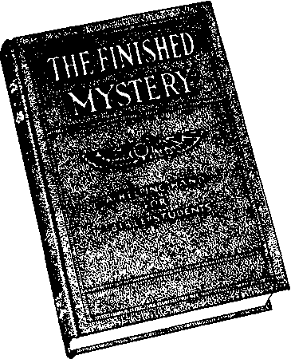
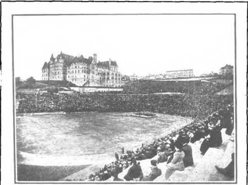

T’non the earth distress of nations with perplexltv; the sea and the wave* (the r<--t)<•>».. discontented) roaring. men's hearts failing them for fear and for looking to the thlng'< con jing upon t he earth (so< ictx ’. for the powers of the heavens (ec< lc~ia'-t h%iu > shall he shaK» n Wb< n x e s< e t hew t in rigs b( gin to come_to pass,
then Know that tU Kingdom of God is at Laud, hook up. lift up your Leads, rejoice, fur >our redemption draweth Digb.— Matthew 24.33. Mark 13 29; Luke 21:2o'31
THIS JOURNAL AND ITS SACRED MISSION
THIS journal is one of the prime factors or instruments in the system of Bible instruction, or “Seminary Extension*’, now betnc presented in all parts of the civilized world by the Watch Tower Bible & Tract Society, chartered A. D. 1SS4, “For the Promotion of Christian Knowledge”. It not only serves as a class room where Bible students may meet in the study of the divine Word but also as a channel of communication through which they may bp reached with announcements of the Society’s conventions and of the coming of its traveling representatives, styled “Pilgrims”, and refreshed with reports of its conventions.
Our “Berean Lessons” are topical rehearsals or reviews of our Society’s published Sti dies most entertainingly arranged^ and very helpful to all who would merit the only honorary degree which the Society accords, viz., Verbi Dei Minister (V. I). M.), which translated into English is Minister of Cod's Word, Our treatment of the International Sunday School Lessons is specially for the older Bible students ami teachers. By some this feature is considered indispensable.
This journal stands firmly for the defense of the only true foundation of the Christian’s hope now being so generally repudiated —redemption through the precious blood of “the man Christ Jesus, who gave himself a ransom fa corresponding price, a substitute] for all”. (1 Peter 1 : ID; 1 Timothy 2 : G) Building up on this sure foundation the gold, silver and precious stones (1 Corinthians 3: 1113; 2 Peter 1 : 5-11 > of the Word of Cod, its further mission is to “make all see what is the fellowship of the mystery which . . .has been hi<l in Cod, ... to the intent that now might be made known by the church the manifold wisdom of God”—“which in o-tber ages was not made known unto the sons of men as it is now revealed”.—Ephesians 3:5-9,10.
It stands free from all parties, sects and creeds of men. while it seeks more and more to bring its every utterance into fullest subjection to the will of God in Christ, as expressed in the holy Scriptures. It is thus free to declare boldly whatsoever the Lord hath spoken—according to the divine wisdom granted unto us to understand his utterances. Its attitude is not dogmatic, but confident; for we know whereof we affirm, treading with implicit faith upon the sure promises of God. It is held as a trust, to be used; only in his service; hence our decisions relative to what may and what may not appear in its columns must be according to our judgment of his good pleasure, the teaching of his Word, for the upbuilding of his people in grace and knowledge. And we not only invite but urge our readers to prove all its utterances by the infallible Word to which reference is constantly made to facilitate such testing.
TO US THE SCRIPTURES CLEARLY TEACH
That the church U “the temple of the living God”, peculiarly “his workmanship"; that its construction has been in progress throughont the gospel age—ever since Christ became the world's lledeemer and the Chief Corner Stone of his temple, through which, when finished, God's blessing shall come "to all people", and they find access to him.—1 Corinthians 3:16, 17; Kpheslans 2:20-22; Genesis 2 s : 14 ; Galatians 3 : 29.
That meantime the chiseling, shaping, and polishing of consecrated believers in Christ’s atonement for sin, progresses; and when the last of these “living stones", “elect and precious," shall have been made ready, the great Master Workman will bring all together in the first resurrection ; and the temple shall be filled with his glory, and be the meeting place between God and men throughout the Millennium.—Revelation 15: O S.
That the basis of hope, for the church and the world, lies in the fact that “Jesus Christ, by the grace of God, tasted death for every man," “a ransom for ail,” and will be “the true light which ligliteth every man that cometh into the world”, “in due time".— Hebrews 2:9; John 1: 9 ; 1 Timothy 2:5, 6.
That the hope of the church is that she may be like her I,ord, "see him as he is,” be "partakers of the divine nature',* and share his glory as bis joint heir.—1 John 3 :2; John 17 : 24 ; Romans 8:17; 2 Peter 1: 4.
That the present mission of the chureh is the perfecting of the saints for the future work of service: to develop in herself every grace; to be God's witness to the world; and to prepare to be kings and priests in the next age.—Ephesians 4:12; Matthew 24: 14; Revelation 1:6; 20:6.
That the hope for the world lies in the blessings of knowledge and opportunity to be brought to all by Christ’s Millennial kingdom, the restitution of all that was lost in Adam, to all the willing and obedient, at the hands of their Redeemer and his glorified church, when all the wilfully wicked will be destroyed.-—Acts 3:19-23: Isaiah 35.
Published ay
WATCH TOWER. BIBLE (r TRACT SOCIETY
124COLUMBIA HEIGHTS^ a BROOKLYN. NY, USA
Fotaiatr Omcis: British: 34 Craven Terrace, Lancaster Gatt, London W. 2; Australasian: 495 Collins St., Melbourne, Australia; SottfA African: 123 Plein St., Cape Town, South Africa.
Please Address the Society in Every Case.
ANNUAL fl UB8CRI PTION PRICE $1.00 IN ADVANCE CANADIAN AND FOREIGN SUBSCRIPTION PRICE $1.50 SEND MONEY BY EXPRESS OR POSTAL ORDER, OR BY BANK DRAFT FROM FOREIGN COUNTRIES BY INTERNATIONAL POSTAL ORDERS ONLY (Foreign translations of this journal appear in several languages)
Editorial Committee: This journal is published under the supervision of an editorial committee, at least three of whom have read and approved as truth each and every article appearing in these columns. The names of the editorial committee are: J. F. RutherfobDj W. E. Van Amburgh, F, H. Robison, G. H. Fisher, W. E. Page.
Terms to theLonTt Poor: AU Bible rtudenti who. by reason of old age or other Infirmity or adversity, are enable to pay for this journal, will be supplied free if they send a postal card each May stating their ease and requesting such provision. We are not only willing^ but anxious, that all such be on our list continually and in touch with the Berean studies.
to Suharrihera • do not. as a ral«, aeed • card of acknowledcmMit for ■ renewal or
ITU.iCtlUOeoKTiocre. for o new aubsenpt&n. Receipt and entry of renewal aro indicated vfthln a month by ebanre In expiration date, as enown on wrapper label. ,
KtUrrcd CM Swoarf CLm« M«ee»r at Rvnoklvn. NY , Poctofficd ttnd^r thd Act of March trd, 1979
LOCAL CONVENTIONS
Biibi Ait). N. Y.. Jul.x 3-5: < ’onmmnicntr with II. W Drumm. Secretary, 514 Wesl Ave., Buffalo, N. Y.
1’i.ri.i: ( itiiEK. M(< ’i . Jnl> 3 5: Communicate with W. J. L. Smith, GG MihsicliiiM*!t> Ave., Battle Creek. Mich.
MESSAGES OF CONGRATULATION APPRECIATED
I* nun far and wide have come let1er.>. cardx. anti telegrams eofur.itulatiHU the brethren at this office wh»M« indictments were recently dLnii'.-od by (he Federal officers for thi> district The Kcitcr.il interests ot the work make it impracticable tor each one to iepl.\ lo ail these nii^siirrs. it is therefore asked that the Irieiid- will kindl.v accept this ar acknowledgment of all such indi< .(lions m iheit intcics’ and love
TO BRITISH AND CANADIAN FRIENDS
b.Htdlv lemeeiber th.it neither British nor l'an.idian Postal Oilers (or Postal Noti^i have anj negotiable value whatever oi:r>i*!e ot the British Empire. Thio aie not pa.vabh* in llm Cnitod Stites hi t r i no I tonal Costal Monov Orders are the proper ones to proem e Local personal check* an* not cashable here
SWEDISH CONVENTION FOR NEW ENGLAND
Fl.iiis a»e under wav tor a three-dav Swedish convention to be held in West Chelmsford, Mass, in Marshall’s Hall. July 3-5. Inquiries concerning accomodations, etc, may be addressed to Mr I*. V. Lundberg. Lock Box 12, West Chelmsford, Mass.
Revelation and Ezekiel Commentary
Exposes the dupliril \ of the clergv : explains the <’:iiisp of the distress of nations: and foretell** Ilie blessing of the people in 1 he near futuie.
For the publication anti rireulaiion of iliis book during the war many Christians suffered .great persecut ion- Indng beaten, tarred and feaihercd. imprisoned, and killed.— Mark 13:9.
Evsry Christian and order-loving person should read it
Revised, illustrated edition, doth bound, po.-t]>aid
(Paper (ocer, magazine edition iact
Via . XL!
Ji NE 15, 1920
No. 12
“The man Chrixt Jextix, who pare himxelf n rnnxom lot 'ill. to hr textittej in line time." (1 Timothy (i) "Thou xh'ilt Iiiiit,' lux xoul 'ill offerin'! tor xin." (fxrtnih HHith) "th ix the p/ o/ntmtom | e.i /not ion- -xiitixlnetion | lor our xinx; unit not for ourx onlu. hut ulxo foi the xinx of the whole irorlil."—1 John 2: t.
WITH the unfolding of the divine program students of his Word have had a clearer vision of the great ransom sacrifice. The distinction between the ransom and the sin-offering has puzzled Bible students. Much discussion has resulted from a consideration of these great questions because they have to do with the deep things of God’s plan. Many have stumbled oxer these subjects, as indeed St. Peter foretold they would. (1 Peter 2: 8) But each one who has kept his heart in the right condition has iu due time been granted by the Lord a clearer understanding of the subjects. It is to be expected that the adversary would try to confuse all on these points, because they deal with the vital truths concerning man’s salvation. While a clear understanding thereof is not necessarily essential to salvation, yet the better we understand, the more we can appreciate the diversified wisdom and the loving-kindness of our heavenly Father.
In the study of the deeper things of God’s Word two things are absolutely essential: (1) The possession of a teachable mind; and (2) a prayerful and thoughtful consideration of the subject. No one ever acquires so much knowledge that he cannot get more. We should not expect while this side the vail to acquire all knowledge. Indeed, the Scriptures indicate that the church will continue to acquire knowledge through all the ages to come. In the examination of the subject here under consideration it is deemed profitable first to ask and answer the following relative questions;
(1) Was the ransom paid at Calvary, or when Jesus ascended into heaven? Or is its payment still future?
(2) What i- the difference between the ransom and the sin-offeringAnd does the church, the body of Christ, participate in one or both?
CO What l on-t it id e- -ati-faction of ju-tice? When and how is ju-tice -ati-fied?
DEFINITIONS
The language we -peak is imp-rfeit, of course; and using this imperfect language nt a loose manner is often the cause of misunderstanding and leads to a confusion of mind. It i' therefore well to define some of the more important word- u-cd in this argument before we begin a specific examination of the subject; and this we do:
I’VNSOM mean-, liteiallv. something to loo-en with: a redempt ive price. Stated in other phrase it means the price or value which can be used in'loosening or releasing something that is in bondage, restraint or imprisonment. Nec”«arily the ransom price must be equivalent to. or exactly corresponding with that which justice requires of the thing or being in bondage.
Merit means value gained. By the merit of Christ Jesus we mean the perfect humanity of Jesus and all the rights incident thereto converted into value or an asset, which is legal tender for the payment of man’s debt.
Legal Tender means currency, money, measure of value, which the law requires and receives in satisfaction of debts or obligations.
To Pay means to discharge an obligation or debt by giving that which the law requires into the hands of the one entitled to receive it. The payor must part with the right to, possession and control of the thing with which he pays; and the payee must receive the possession and control of the same.
Deposit means to place something of value for safekeeping in the custody of another. The depositor does not part with the right to, constructive possession and control of the thing deposited.
Sin-Offering means the presentation and use of the merit or ransom price.
Atonement means reconciliation; restoration of friendly relationship; satisfaction; propitiation; appeasement.
NECESSITY FOR RANSOM
Properly we first determine whether a necessity for the ransom existed before we proceed to the specific consideration of the questions here to be determined.
The perfect man Adam had the legal right to life. The perpetual enjoyment of that rigid depended upon liis full obedience to Cod’s law. The law of God is his expressed will. The man Adam violated God’s law and thereby forfeited hi.- right to life. God’s judgment of condemnation wa- entered and enforced against him. The judgment demanded the life of Adam, and its enforcement deprived him of In- life. His disobedience therefore resulted in the forfeiture of life and its rights.
Adam had been granted b\ Jehovah the power to tran-mit life. This power he did not exerci-c while in a perfeel condition. He -till possessed tlu> powei after hi-condemnation, but having forfeited the right to life himself, all Io whom he would transmit the geim or life principle would bo imperfect. having no legal right to life. None of the off-pring of Adam had the right to life for the-e rca-on-: (1) Because their father had no legal right to life and was undergoing the judgment of death when he begat his offspring; hence could not transmit the perfect life principle; and (2) because these, as his offspring, being born imperfect, were therefore unrighteous and could not have a right to life while unrighteous. Only righteous creatures possess the right to life according to the divine law. Had a child been born with a legal right to life, then his death could occur only by reason of his own wrongful act, thereby forfeiting that right. Children are not responsible for their birth. All children are born sinners because of Adam’s original sin. (Romans 5:12; Psalm 51:5) Herein is another manifestation of the wisdom and goodness of Jehovah in that he brought all the offspring of Adam under the effects of the judgment of death, in order that one ransom price might in his own due time be used to remove this disability from all. Adam and all of his offspring being under the disabilities arising from the judgment of death, life could never be had by any of them without the removing of these disabilities, which can be done only according to the divine arrangement, viz., the providing, application and use of the ransom price.
1711
WHO IS ABLE?
Since it was a perfect man that violated the law, and thereby forfeited his human life together with the rights incident thereto, therefore nothing short of a perfect human life of another could meet the requirements of the law as a substitute for the wrongdoer, which substitution would result in the judicial release of the wrongdoer and his offspring from the judgment and its effects. Who could be found able to meet these requirements? “None of them can by any means redeem his brother, nor give to God a ransom for him.” (Psalm 49: 7) There are two potent reasons why this statement is true, viz.: (1) Because in all the earth there was no perfect human being who could provide a ransom price, all the men of earth being the descendants of Adam and all being born sinners, imperfect and unrighteous; and (2) because the judgment was entered against Adam in the divine court and it follows that the ransom price must be presented to divine justice in the court of heaven, and the one presenting it must have access to heaven. God provided the perfect man Jesus by transferring his life from the spirit to the human plane; and in order for him to become the ransomer, he (Jesus) must first lay down his perfect humanity in death and afterward be raised from the dead as a spirit being and ascend into heaven and there present the value of his sacrifice to Jehovah in order that those under disability might be released from the bondage of sin and death. To this end Christ Jesus was “put to death in the flesh, but made alive in the spirit”. (1 Peter 3: 18) Having been made a perfect man, he was qualified to meet the requirements of the divine law; therefore he is able to save to the uttermost.—Hebrews 7:25.
Foreknowing what would be man’s course, God provided from the beginning for the redemption and deliverance of the human race from the judgment of death and its effects. His plan is set forth in his Word and is his expressed will. It was the expressed will of God that man should be redeemed and delivered from the judgment of death. Hence he promised: “I will ransom them from the power of the grave; I will redeem them from death”.—Hosea 13:14.
THE MAN JESUS
Jesus was made flesh. He took upon himself the form and nature of man. He was made perfect, holy, harmless, and without sin. (John 1:14; Hebrews 2: 14; 7: 26) At the age of thirty years Jesus was in every respect the equal of the perfect man Adam. For what purpose had Jesus come into the world ? He answered: “Lo, I come: in the volume of the book it is written of me, I delight to do thy will, 0 my God”. (Psalm 40: 7, 8) Salvation of man from the judgment of death is the expressed will of God. (1 Timothy 2: 4) Jesus came to do the will of God; therefore, to redeem man and provide everlasting life for all who will accept the benefits of the ransom sacrifice upon the terms offered.
Was the perfect man Jesus the ransom price? No, because as long as the perfect man remained alive Adam and his race could not be ran.-omed. The perfect man Jesus must die in order to provide the ransom price. Such was God's will, as he time arid again showed forth in the types and shadows. Jesus said: “The Son of man came not to be ministered unto, but to minister, and to give his life a ransom for many”. (Matthew 20: 28) Since he came to do God’s will, then it was the will of God that he should give his life a ransom. “And being found in fashion as a man, he humbled himself, and became obedient unto death, even the death of the cross.” (Philippians 2:8) Herein is proven that he willingly submitted to death because it was the will of God for him thus to do and thereby provide the ransom price. As a perfect man, Jesus had the right to live forever on the earth, provided he kept the law of God. He did keep the divine law perfectly. That entitled him to life. Why, then, must he die? Because Jesus could not provide the ransom or redemptive price while he remained in the flesh. His humanity God had provided for the purpose of making a sacrifice of it. (Hebrews 10: 5) Jesus now must convert this perfect human life into an asset of value, which asset is to be used for the releasing of man from the judgment of condemnation; and to do this he must lay down his human life and afterward, as a creature divine, take up the legal right thereto and use it as such asset, merit or value, in harmony with the divine purposes.
To illustrate this point we take a man whom we call John for convenience, who is languishing in prison to satisfy a fine of a hundred dollars because of his inability to pay that fine. John’s brother Charles is willing to pay the fine but he has no money with which to pay. Charles is strong and vigorous, has time to work, is willing to work; but his strength and time and willingness will not pay the debt for his brother John. Smith desires some one to work for him and has the money with which to pay. Charles engages himself to work for Smith and earns a hundred dollars in cash and receives it. Thereby Charles has reduced his time, strength and' vigor into a money value, which has purchasing power, and which is legal tender for the purpose of the payment of John’s obligation. Charles then appears before the court which entered the judgment against his brother and offers to pay the hundred dollars which the law demands of John. The court officer accepts the hundred dollars and releases John. John is thereby judicially released from the judgment and his brother Charles has become his ransomer or redeemer.
Adam was the son of God. It was judicially determined bv Jehovah that Adam should forfeit his life in death, which judgment would mean the eternal death of Adam and all of his offspring unless he and they should be redeemed. Possessing the power to beget children before this judicial determination, all of his offspring came under the effects of the judgment. He is now hold in the prison house of death to meet the requirements of the law. The entire human race is in the same condition, resulting from the original sin of Adam. Jesus, the perfect man, the Son of God, was designated by the Lord as “the Son of the man”, this title implying that he, being the only perfect man that has lived on earth since Adam, was entitled to everything that belonged to Adam, life and all the blessings incident thereto. Jesus had the power to produce a perfect race of people; therefore in every respect he was the exact equal of Adam before Adam sinned. It was the will of God that Jesus should redeem Adam and his offspring. Jesus was willing to pay Adam’s debt and redeem him, but the perfect, righteous, human being Jesus could not accomplish that purpose while living in the flesh, for the same reason that Charles could not use his strength, time and energy to pay the debt of his brother John, but must first reduce that to a money value. Jesus must reduce his perfect humanity to a measure of value (which measure of value we call merit), which value or merit eon.dilutes legal tender for the payment of the debt of Adam and his offspring, furnishing the price sufficient to release them all judicially. To provide this lansom price Jesus mild die. [hit to present the value of it before Jehovah hi1 must be alive and have access Io (lie court of Jehovah.
At the Jordan the perfect man Jesus presented himself in consecration to do the will of Jehovah and it was God’s will that Jesus should lay down his life in death, but not ptirt with ths legal right to life as a man. It was the will of God that Christ Jesus should arise out of death a divine creature, and as such should take up that merit or right or value of a perfect human life and use it as an asset or legal tender in harmony with the divine will, viz., to release mankind judicially and to provide life for the human race. We often use the term “legally released”. The Lord could not provide for an illegal release of the human race, because God is and must be just. We here use the term “judicially released’' because that means the release is done in a judicial capacity or manner by the one having authority to release.
This argument is in harmony with the statement of Jesus: “The thief cometh not, but for to steal, and to kill, and to destrov : I am come that they [the people, the human race] might have life, and that they might have it more abundantly. I am the good shepherd: the good shepherd giveth his life for the sheep. ... As the Father knoweth me, even so know I the Father: and I lav down my life for the sheep. . . . Therefore doth mv Father Une me, because I lay down my life, that I might take it again. No man taketh it from me, but I lay it down of myself [willingly], I have power to lay it donn. and 1 have power to take it again. This commandment have I received of my Father.”—John 10: 10. 11, 15, 17, 18.
(Otherwise stated, Jesus here says: “'It is the will of God that I lay down my life and that I take it again. As a man, therefore, I lay down my life in death, and when I arise from the dead as a new creature divine I still possess the legal right to this perfect human life, and this I will take up again.” That which Jesus laid down was his human life, and as a divine creature arising from the dead he took it up; and that human life, with the right to it is still his, never having been forfeited; it is this which constitutes a valuable asset or merit in his hand, and which is the ransom pi ice for the purpose of releasing mankind from death and providing life everlasting for the race.
At Calvary Jesus ceased to experience his human life, but the right thereto he retained. When he arose from the dead, that perfect human life and the right thereto constituted the valuable thing or asset, which is the merit to be used according to the will of God.-Rev. 1:18.
AT CALVARY
Did Jesus pay the ransom price at Calvary? Or did he apply it at that time for the benefit of any one? He did neither for the following reasons:
To pay a debt for another means that the payor must part with the right to, possession and control of the price, a-s'd or measure of value which is used to make payment. Whim one pays over an asset it cannot be taken back nor used for any other purpose, for the reason that the control of it has passed out of his hands. To illustrate: Suppose the bank holds your brother's note foi a thomand dollars. You have a thousand dollars and you go into the bank and say to the banker: Here is a thou-and dollars which I want 1o pay or apply to that note my brother owes you. The bank accepts the money on the terms offered and your right to and control over it ceases. Jesus laid down his human life at Calvary. Had it been possible for him then' to pay the ransom price he would have surrendered control over it and could not have used it thereafter. While he laid it down he did nil part with the right to it, however. When he arose from the dead he had the right to two lives—the right to a perfect human life which he had laid down and now taken up, and the right to a divine life to which Jehovah had resurrected him.
If you lay down a dollar on the table you do not part with the legal right to it merely because you lay it down, even though it has passed out of your actual possession. And if some one takes it away, your legal right to it still remains the same. Jesus stated that no one could take his life from him. but that he laid it down according to the Father’s will that he might take it again; i. e., he laid down his human life, retaining the legal right to it, and when he arose from the dead he had the legal right to life as a human being, but being then a divine creature he had no individual use for the human life, his purpose then being to use it as an asset in harmony with the Father’s will for the benefit of mankind.
What life did he lay down? The Scriptures answer: “He poured out his soul [being"] unto death”. He died as a man. What Je«us did at Calvary was to provide the ransom price by laying down his life. At the Jordan he began to lay down his life and at Calvary he finished that work. All this he did on earth.
SIN-OFFERING
Is there a difference between the ransom and the sin-offering; and if so, what is it? There is a difference and that difference may be defined briefly thus: Ransom is the full redemptive price provided. Sin-offering is the presentation and use of that ransom price or merit. The ransom work is the disposition of the price, the application of it and the deliverance of the race from the prison house of death, and the restoration of mankind to life. The ransom price was provided on earth. The sin-offering, begun on earth, is completed in heaven. The ransom work follows the presentation or completion of the sin-offering.
THE TYPES
Types and shadows enable us to have a clearer understanding of realities and for this cause were they given. There does not appear to be a type of the ransom set forth in the Scriptures; and indeed it seems that it would be almost impossible so to do. There is an illustration of the ransom price being provided in the passover lamb which was slain. This took place in the spring of the year. The Lord Jesus is referred to in the Scriptures as “the Lamb of (iod which taketh away the sin of the world". (John 1 : 29) The sin-offering is shown in the txpe of Israel's annual atonement day sacrifices. These were always performed in the autumn season of the year. These two pictures, then, were as far removed from each other as they could be with reference to time, within one year. The atonement day sacrifices do not typify the ransom; but those sacrifices were typical of the sin-offering. The bullock pictured the perfect man Jesus, while the lamb portrayed his innocence as a man. The bullock slain on the atonement day was a type of the man Jesus. Aaron the high priest, who officiated at this sacrifice, was a type of the new creature Christ Jesus. When Jesus came to the Jordan as a man he was the antitype of the bullock. When he had presented himself in consecration, was accepted and begotten and anointed with the holy spirit, he'ai once became the antitypical high priest. Thus for three and a half years the new creature Christ Jesus, as the high priest, was laying down his own humanity, which sacrifice he finished at the cross.
On the typical day of atonement, as described in Leviticus 16, we see Aaron the high priest clothed in his sacrificial robes in the court. Here the bullock is slain. What is Aaron doing? He is beginning to make a type or shadow of the great sin-offering. The bullock slain in the court was a representation of Jesus at the time of his consecration when he became dead as a man from Jehovah’s viewpoint. The blood of the bullock represented a poured out human life, the merit, the redemptive or ransom price. Aaron the high priest took the blood ip a vessel and went into the holy and tarried there, while he burned incense, thereby representing Jesus for three and a half years in the holy, his sacrifice ascending as a sweet incense unto Jehovah. The high priest then passed under the second vail, which represented Jesus going into actual death upon the cross. The high priest in the type arose on the other side of the second vail with the blood in the vessel, thus representing Jesus, the great high priest, arising from the dead, possessing the merit or value of his sacrifice, viz., the value of his own perfect human life, which constitutes the ransom price and which was now about to be presented as a sin-offering. The high priest in the type then advanced toward the mercy seat, which represented Jesus, the antitypical high priest, ascending into heaven. In the type the high priest sprinkled the blood upon the mercy seat, which represented Jesus, the antitypical high priest, depositing the merit or value of his sacrifice upon the mercy seat in heaven, thus presenting it as a sin-offering. In the type the high priest began the offering for sin in the court and finished it in the most holy. In the antitype Christ Jesus, the high priest, began the offering up of himself on earth and presented the value of that human life in the Most Holy, heaven itself, as a sin-offering, appearing in the presence of Jehovah for the benefit of the church. This proves conclusively that the random price was not paid at Calvary; nor was it applied at that time for any one. It was the man Christ Jesus, as stated in our first text, who provided the ransom price by laving down his perfect human life in death. It vias the divine Christ Jesus who presented the merit of that sacrifice m heaven itself as a sin-offering.
HAS THE RANSOM PRICE BEEN PAID?
In the type the high priest offered tile blood of the bullock for himself and for his house. “Himself-’ represented the members of the body of Christ, the church, while “his house" pictured all others begotten of the holy spirit but who ultimately fail to get the divine nature. When Jesus ascended into heaven he appeared in the presence of (tod for the church. "For Christ is not entered into the holy places made with hands, which are the figures of the true; but into heaven itself, now to appear in the presence of (loci for us.” (Hebrews 9:24) Thus we see that Jesus must appear ami did appear in heaven with the ransom price and presented it as a sin-offering.
Did Christ Jesus, the great high priest, pay over the ransom price in behalf of any one when he ascended into heaven? No, he did not. Had he paid it over at that time there would never have been a church. Had he paid it over then he would have parted with the right to and surrendered the possession and control of the ransom price. Had he done this he never would have had any merit to be used for the justification of the church. The merit paid over into the hands of justice would have resulted in the judicial release of the entire human race from the effects of the judgment of death that was entered again-t Adam directly and which indirectly affected all of his offspring, because that was exactly what the law demanded. The law of God is right and just; therefore as soon as the merit of Christ is paid over it must operate to release judicially those held in bondage.
If Christ Jesus did not pay over the ransom price to justice when he ascended on high, how then could any of the Adamic race be justified in order to become a pari of fhe cliureh? The judgment of death came directly upon Adam. H was a perfect man that sinned and a perfect man that was sentenced to death. “In Adam all die" (1 Corinthians 15: 22). which means that all the race, being unborn at the time Adam sinned and not begotten until afterward, was born imperfect, unrighteous; therefore without the legal right to life, and this result was because of Adam's sin. Hence the race* is imperfect and dying, not because of personal iniquity, but because of inherent imperfections due to the sin of Adam.
If any one of Adam's offspring could come up to the standard of righteousness by his own efforts, would he have been released from the effects of the judgment of death that came upon Adam? Yes, for the1 reason that all righteous creatures are entitled to live. Cod gives us proof of tire correctness of this conclusion in the statement of the promise of the law covenant. Tn that covenant he said to the .lews: "Ye shall therefore keep my statutes, ami my judgments: which if a man do, he shall lire in them: I am the Cord." (Leviticus 18:5) “Eor .Moses describeth the righteousness which is of the law. That the man which doeth those thinijs shall lir'e bij them." (Homans 1(1:5) "And, behold a certain lawyer stood up. and tempted him, saying. Master, what shall I do to inherit eternal life? He said unto him. What is written in the law? how readest thou? And he answering sank Thou shall love the Lord thy Cod with all thy heart, and with all thy soul, and with all thy strength, and with all thy mind; and thy neighbor as thvself. And he said unto him. Thou hast answered right: thi< do. and thou shall live." (Luke 10: 25-2.8) Here tin* Lord was showing that absolute righteousness, perfection, or justification, operates to the release of any of Adam’s offspring from the effects of the condemnation. The principles of Cod are eternal. They change not. Cod was not trilling with the Jews. He could not do such a thing. He meant exactly what he said. If an Israelite had been able to keep that law perfectly he would have received life without the sacrifice of Jesus, bill such would not hare been true with reference to Adam himself, because the jude/ment of death was direelli/ ai/auisf Adam. Sine1 no unrighteous creature can Ine. being therefore' under the bondage of death, it follows that by becoming lightemn the one under bondage would thereby be released from blindage and have the right to live*.
We must keep in mind that the condemnation upon all of Adam’s offspring was indirect by the rule of inheritance. It was Adam who was sentenced to death, and exercising the power of procreation thereafter while imperfect, all of his children came forth as imperfect creatures; hence all under condemnation by virtue of his wrongdoing. The law covenant proved to those embraced in it that no imperfect man can keep God’s law, because of his imperfections, his unrighteousness. Thus God has demonstrated to the Jews and through them to the whole human family’ that no man has power to save himself because of his imperfection or his unrighteousness. Never in the ages to come will any man be heard to say: I might have saved myself if the opportunity had been granted. St. Paul says: “If there had been a law given whirl) could have given life, verily righteousness should have been by the law’’. (Galatians 3:21) Tliis was not because the law was imperfect, but becau-e of the imperfection of those who came within the terms of the law covenant. The law served as a schoolmaster or pedagogue to lead Israel unto Christ, that their justification might be by faith in the merit of his sacrifice. (Galatians 3: 1!), 24) The law covenant failed to give life to any of the Israelites, not because of the imperfections of the law, but because of the imperfections of man. “Eor what the law could not do, in that it was weak through the flesh. God sending his own Son, in tin1 likeness of sinful flesh, and for sin, condemned sin in flu1 flesh." (Homans <8: 3) If Moses had possessed the power to make a man righteous and had made him righteous under the law, would that not have released him from bondage and given him the right to lite? .Most manifestly so. Jesus declared that lu> came to fulfill the law, and he proved that a perfect man could keep that law perfectly. In other words, the keeping of the law is tin1 measure of a perfect man’s ability. 11 e proved that he was entitled to live as a man because he was righteous and therefore able to keep the law perfectly. He proved that no one of the human family could ever get life except through his (Jesus’) merit. Nothing else would bring him to the standard of i ighteousiicss. Hence ihe absolute necessity for the ransom sacrifice. I»y the laving down of his perfect human life he provided this meritorious asset, which is the ransom price and which can justify through faith all who come to God through him according to the terms of God’s arrangement. When Jesus ascended into heaven he did not pay over the ransom price, the merit of his sacrifice, but retained control of it to bi' used m harmony with God’s holy will.
MERIT DEPOSITED
Jesus appeared in the presence of God for the church and presented and deposited the merit of his sacrifice upon the heavenly mercy seat. He there presented it as an offering for sin to be used to remove the effects of sin. A depositor does not lose control of the thing deposited. Illustrating this point: Suppose John has three brothers, each of whom wants to borrow a thousand dollars from a bank and each oilers to gix<* his note to the bank for such loan. None of them has any money in the bank, and they have no credit, therefore, io make their notes good. Should John go to the bank with three thousand dollars and say to the banker: 1 have here three thousand dollars and I will pay it over to you for these three note's of my brothers, and he then pays it over to thi' bank for that purpose, he would thereby part with the ownership and the possession and control of the money. But if instead of doing that he goes into the bank and deposits a larger sum of money to his own credit and then endorses his brothers’ note's by writing his name upon them and the bank accepts his endorsement by reason of the amount of money deposited by him in the bank, then he would not part with the ownership or control of his money. He would in this ease merely impute to his brothers a sufficient amount of his own credit or asset which he had on deposit in the bank to make their notes acceptable to the bank. His money remains in the bank, but there is charged against it the credit to the amount of the notes which he has imputed to his brothers; and when his brothers take up the notes he or his estate is thereby released from the obligation of security.
When Jesus appeared in heaven, instead of paying the debt against Adam and his race and releasing them, he deposited that merit in the hands of justice, which for convenience we call the Bank Mercy Seat. This asset, the ransom price or merit, thus deposited, remained under the control of Jesus, to be used for the purpose of imputing to the various members of the church making a full consecration and thereby making them acceptable to the Father, that he might justify them.
HOW JUSTIFIED?
Justification means made right with God. For convenience we limit its meaning to the condition of acquired righteousness. It does not mean the process of making right. It means the fact of one being in relationship with God. Adam as a perfect man was just. Jesus was always just or righteous because always right with God. All of Adam’s offspring have been born below the plane of divine approval—hence unrighteous. How then could any one of them be justified unless the merit of Christ were actually paid over to justice? As illustrating this point, let us suppose Charles desires to come into harmony with God. He cannot come to God himself because he is imperfect, therefore unrighteous, which unrighteousness is the result of Adamic sin. Charles believes on the Lord Jesus as his Savior. He believes he is able to save him to the uttermost; and thus believing, he willingly surrenders his own will to do the will of God; and this represents Charles’ part of his consecration. He is not yet acceptable to God, but when Christ Jesus as his high priest receives Charles, imputes his own (Jesus’) merit to Charles, he thereby makes him presentable to the Father, and presents Charles to Jehovah, who may accept him; and accepting him, justifies him, makes him right, and thereby results to Charles the right to live as a human being, which. makes him acceptable as a part of the sacrifice of Christ. In other words, it is the merit of Jesus imputed to Charles that makes him acceptable and it is God that justifies him, makes him right, by virtue of having had imputed to him that merit.
And applying the illustration, at the time of Charles’ consecration Jesus endorses him by becoming Charles’ advocate, by standing sponsor for him, by imputing to Charles a sufficiency of his own merit which is on deposit in the Bank Mercy Seat to bring Charles up to the standard of righteousness. When he is thus counted righteous by Jehovah, he is brought from under that bondage which resulted from the Adamic judgment.
To condemn means to disapprove; to pronounce as wrong. Judgment means the act of determining, as in courts of law, what is conformable to law and justice; also, the determination, decision, or sentence, of a court; the mandate or sentence of God as the Judge of all. Adam was before the court of Jehovah, was properly tried, and Jehovah justly sentenced him to death. He entered the judgment againnt Adam. His children were not included in that direct judicial determination because not in existence and could have no knowledge of the trial and judgment; but when they were born they were imperfect, therefore disapproved, therefore wrong, and therefore condemned; and by this process they came under condemnation. “It follows, then, that just as the result of a single transgression is a condemnation which extends to the whole race, so also the result of a single decree of righteousness is a life-giving acquittal which extends to the whole race. For as through the disobedience of one individual the mass of mankind were constituted sinners, so also through the obedience of the One the mass of mankind will be constituted righteous.”—Romans 5: 18, 19, Weymouth.
When the man Charles is justified he is not righteous in himself but God counts him as righteous on the strength of the merit of Jesus’ endorsement or imputation of merit to him and he thus becomes acceptable to God as a part of the sacrifice of Jesus Christ, and now Christ Jesus the high priest offers him up as a part of his own sacrifical body. Charles’ justification is the result of faith in the blood of Christ, of his full consecration to do God’s will, of the imputed merit of Christ to him, and of the grace of God toward him. “It is God that justifieth.” God grants this justification, which results in releasing Charles from the effect of Adam’s judgment only upon condition that John has previously agreed to give up that which results from his justification, viz., the legal right to live as a human being. When one consecrates to do God’s will it means that whatever is the will of God concerning him that will he do. Jesus says: “If any man will come after me, let him deny himself, and take up his cross, and follow me.” The self-denial is his consecration and when he is counted right he has already agreed to do the will of God; and the will of God concerning him is that he should be made a part of the sacrifice of Christ Jesus. For no other reason is any person justified during the Gospel age.
SATISFACTION OF JUSTICE
Did Jesus satisfy justice with his merit when he appeared in the presence of God, in heaven itself? Our answer is, No; for the reason that justice was always satisfied. There never was a time when justice was not satisfied. Satisfaction of justice means the fulfilling of the demands of the law. God’s law demanded the death of Adam. His judgment was against Adam directly. The death of Adam being the fulfillment of the demands of the law, justice was thereby satisfied and has remained satisfied ever since. Had Jesus paid over the value of his human sacrifice, to wit, the ransom price, for the purpose of satisfying justice at the time he ascended into heaven, then justice has been doubly satisfied from then until now. In other phrase, justice would have received exactly double what the law demands. Such a thing would be an impossibility with God, for the reason that he cannot be unjust. It was one man that was sentenced to death and all others became sinners or subject to death through the sin of that one man. All others were born sinners because imperfect as a result of Adam’s sin. The death of the perfect man Jesus provided the ransom price, a price sufficient to satisfy the demands of justice against Adam and all of his offspring; and if that was paid over at once to justice, then either Adam and his race must be at once judicially released from the condemnation and its effects, or justice has received double satisfaction.
CHURCH’S PARTICIPATION IN THE SIN-OFFERING
In the atonement day sacrifice, after the presentation of the blood of the bullock, Aaron the high priest slew the Lord’s goat and did with its blood exactly as he did with the blood of the bullock. “Thon shall he kill the goat of the sin offering, that is for the people, anil bring his blood within the vail, and do with that blood as he diil with the blood of the bullock, and sprinkle it upon the mercy seat, and before the mercy seat.’’ (Leviticus 1G: 15) the offering of the Lord’s goat foreshadowed the participation of' the church in the sin-offering in behalf of the world. The slaying of the goat represented the judicial death of the humanity of the one who consecrates, and that such an one is justified and accepted by Jehovah as a part of the sacrifice of Christ Jesus. “Ye are dead, [Greek ye died] and your life is hid with Christ in God.” (Colossians 3:3) The Apostle means that those who have been accepted as a part of the sacrifice of the Lord Jesus and have been begotten by the holy spirit, are counted dead as human beings from God’s viewpoint, and henceforth their fleshly body is the organism of*the new creature. No member of the church offers himself as a part of the sin-offering. In the type it was the high priest who made the offering and no one else made it. When one consecrates, is accepted and begotten by the holy spirit, his acceptance is in the beloved One and he is counted as a member of the body of Christ and is made to appear in the holy in the person of the priest and not individually. It is the high priest Christ Jesus that is offering up the members of his body. This offering began at Pentecost and has been in progress throughout the sacrificial age. When the last member of the body is completed in sacrifice and the change takes place in the first resurrection, each member of the body being then glorified will be a part of the great high priest.
The merit of Christ deposited in the Bank Mercy Seat, as above suggested, when he appeared in heaven, having been used to impute credit to each one who presents himself in consecration, it follows that that merit must remain where deposited to keep good each consecrated one as a basis of his justification until his course is finished in one of three ways, to wit: the second death, the great company class, or the little flock. When each of the spirit-begotten ones has finished his course, then there will no longer remain any obligation against the merit of Christ on deposit. That deposit is the great ransom price, the merit, the value, of his sacrifice; and it being released from all such obligations will be ready to be presented and will be presented as an offering for sin on behalf of the world of mankind. Christ Jesus, as the high priest, offers up each member of the 144,000 who compose his sacrificial body. In the type the high priest entered the most holy with the blood of the goat and did with it as with the blood of the bullock. Thus he pictured the sin-offering on behalf of the world. The high priest is always the one tli at presents the sin-offering. When offering the merit of Christ typified by the bullock, Jesus Christ alone constituted the high priest. When offering or presenting the blood of the antitypical goat, the high priest will be composed of Jesus Christ, the head, and the 144,000 members of his body, the church. Since the high priest makes the sin-offering and presents it, therefore when the merit is presented as a sin-offering in behalf of the world, the church of necessity must ha\e a part therein by virtue of the fact that the church will then be a part of the priesthood. The merit, or purchasing value, is that of Christ Jesus. The body members are taken in as a part of the priesthood, and because of being a part of the priesthood they participate in the sin-offering.
When the final presentation is made as the sin-offering, the merit of Christ, released from all other obligations, will be used for the sealing of the new covenant, and will then judicially release Adam and his offspring from the judgment and condemnation; and through the terms of the new covenant the world of mankind will be granted the opportunity of being restored to that which father Adam forfeited. Then it will be. as stated by St. John, that he is “the propitiation . . . for the sins of the whole world.”
Therefore we see that Jesus alone provided the ransom price by laying down his perfect humanity, which corresponded to the perfect human life which Adam had forfeited. Christ Jesus the high priest presented the merit or value, or redemptive price, as a great sin-offering in heaven on behalf of the members of his body and the household of faith. In this the church had no part u hat-never. The church does not provide any part of the ransom price; but it is upon the basis of that merit, or ransom price, that the members of the body are justified and become joint-sacrificers with Christ Jesus; and when the sacrifice of the body is finished and the members have become glorified members of the priesthood, they participate in the presentation or in the sin-offering on behalf of the world. The body members’ part in the sin-offering prior thereto is that the Lord Jesus, as the great high priest, is offering them up as a sacrifice.
ADVOCATE
St. John plainly states that Jesus is the advocate for the church. (1 John 2: 1) St. Paul states that Jesus is the mediator between God and men (1 Timothy 2:5); and that he is the mediator of the better or new covenant. (Hebrews 8:6; 9:15) There is a distinction between an advocate and a mediator. An advocate is one who officially and authoritatively represents another before a tribunal. The word counsellor is ofttimes used in a similar sense: one who stands sponsor for, or represents, another. A mediator (in its Scriptural sense) is one who interposes between parties at variance for the purpose of reconciling them.
Had Jesus paid over the ransom price at Calvary or when he ascended into heaven, he never could have been the advocate for the church for two reasons: (1) There could have boon no church for which to advocate; and (2) it is upon the basis of his merit on deposit in what we have here termed the Bank Mercy Seat that he could advocate for those who are consecrated and were begotten by the holy spirit. That merit imputed to such consecrated ones does permit such to have a standing in the tribunal or court of Jehovah thrnuijli their Advocate or legal representative, Christ Jous. "If any man sin, we | new creatures | have an advocate with the Father, Jesus Christ the righteous: and he is the propitiation [satisfaction| for our sins: and not for our only, but also for the sins of the whole world.” (1 John 2: 1, 2) 'Phus if the new creature, because, of imperfections and weaknesses, commits a wrong, his advocate Christ Jesus, on the basis of having the merit above mentioned, presents such a one before the tribunal, advocating his cause, and thereby removes from the garments of such a one any spot, wrinkle, or such thing, and keeps him in good standing with Jehovah.
The sacrificial work of the antitypical atonement day once finished, the merit of Christ then released will bo used to seal the new covenant or contract. The new covenant, technically speaking, will be made with Cod on one side and with Christ as the legal representative of Israel, on the other side. This is a bilateral or twosided contract. Israel and all the world of mankind, being imperfect, are out of harmony with Cod, and the purpose is to reconcile all such with God who will voluntarily meet the terms of the new covenant. Being out of harmony with God, they are not competent to enter into a contract personally; but Christ, as the mediator and legal representative, there enters into or makes a covenant on behalf of the incompetent ones. Hence the Apostle says that God will make a new covenant with Israel, Christ being the mediator.
The first ones to have the opportunity of being reconciled to God and who will be the fruits of this covenant will be the Israelites; and therefore all who would have the benefits of the covenant blessings must become Israelites.
One may be an officer and yet not be performing the duties of that office. When Jesus ascended on high it would be proper to say that he became the Advocate of the church and the Mediator of the new covenant on behalf of the world. lie has been performing the* duties of the office of advocate throughout the sacrificial age. He could not perform the duties of the covenant Mediator until the covenant is in operation. Therefore he assumes and performs the duties of mediator between God and man at the institution of the new law covenant. His work will result in bringing about harmony between God and man, i. e., making man at one with God.
This work of atonement, or at-one-ment. continues throughout the Messianic reign.
“God . . . will have all men to be saved, and to come unto the [accurate] knowledge of the truth.’’ (1 Timothy 2:3, t) The saving here clearly means salvation or liberation from the Adamic judgment and condemnation. The* sealing of the new covenant with the blood of Christ opens the way for Adam and his children to be brought back to God. The merit of Christ applied at that time judicially releases Adam and his offspring from the judgment and the elfects thereof, and through the terms of the new covenant they are returned or brought back to a condition of perfection and reconciliation with God. In order to thus be brought each one must have knowledge. Life is the gift of God through Jesus Christ our Lord. (Romans 6:23) There can be no gift without knowledge. on the part of the donee. He must know of the offer and accept it in order to complete the gift. All of mankind, therefore, must first be brought to a knowledge of the truth concerning Jesus’ sacrifice and the way leading back to life before their share in the benefits of that sacrifice can be accepted. Hence the benefits of the ransom sacrifice come to each one through a knowledge of Christ Jesus and his work. Having this knowledge of the offer, the opportunity is granted to accept it ami live.
Those accepting the terms, then, of the new covenant and rendering obedience thereto will be taught by .the great Prophet, ministered unto by the great Priest, ruled over by the great King; and thus receive the beneficent ministration of the Christ, the great Prophet, Priest and King. Thus the ransom work will continue throughout the reign of the Messiah. This work will be finished at the mid of the Millennial age and all of the disobedient ones having been destroyed, and all of Hie obedient ones restored to human perfection. they will be competent to contract or make a personal covenant with God. The office of the Mediator then ceases, because there is no further necessity for it. The great Mediator then withdraws and turns the race over to Jehovah. The final test is applied, and those standing the test will be granted life everlasting as human beings on earth. This will mark the completion of the ransom work, the at-one-ment fully accomplished, and the human race brought back into harmony with God, all of which has been made possible by the merit of Christ Jesus. That perfect life laid down by Jesus, being the corresponding price, the ransom, when fully disposed of and given for man’s benefit, will restore all of the obedient ones of the human race to perfection of life, dominion and happiness.
WHEN Brother Russell published Volume I he announced in the preface that the series of Studies in the Scriptures would be in seven volumes. After his death the seventh was completed and published under the title, “The Finished Mystery”. Most of the readers of The Watch Tower are acquainted with the fact that this volume is a verse-by-verse commentary on the book of Revelation, the Song of Solomon and the prophecy of Ezekiel. The publishers of the book are in no wise responsible for the scathing rebuke that the unfaithful clergy receive therein; because God foreknew and foretold this through the words of his prophets centuries ago. “The Finished Mystery” merely calls attention to these things now, because the time is due.
In 1917 and the early part of 1918 there was a wide circulation of “The Finished Mystery”. The war furnished an excuse to stop it. .lust how much influence was back of the efforts to stop its circulation it is not necessary at this time to discuss. We may have something to say about that later on. The Congress had enacted an espionage law which made it a criminal offense to do anything that would interrupt the Government in its selection of an army and navy during the time of war. The war is now over, even though it may be technically said the peace has not been established. The selection of an army by the Selective Service Act has been abandoned; so there could be no just cause or excuse now for anv one to interfere with the disposition of “The Finished Mystery”.
In order that we might be fully advised in the matter, and for the benefit of the Watch 'Power readers, the Society has procured the legal opinion of the law firm of Messrs. Sparks, Fuller and Stricker, which speaks for itself and which is as follows:
“Brooklyn, X. Y„ May 25th, 1920. “Watch Tower Bible & Tract Society,
“124 Columbia Heights, "Brooklyn, N. Y.
“Gent lenten :
“We have examined |be revised edition of ‘Tim Finished Mystery’, published in pamphlet and in bound volume, which you submitted to us for examination. We have carefully noted the subject matter contained within pages 247 to 253 of the bound volume and on page 13(1 of the pamphlet edition, commentary upon the Thirteenth verse of the Sixteenth Chapter of Revelation. The language to which the Federal authorities objected in this part of 'The Finished Mystery’ as originally published has all Iteen removed. It is our opinion that the substituted matter with its modification of thought and change of expression is free from all ground of reasonable objection, as tending toward violation of any statute. In our opinion tins revised edition of ‘The Finished Mystery’ contains nothing which would justify any person or authority in holding ihal its publication, distribution or use is in violation of any law. This edition was, so far as we know, never the subject of complaint by the Federal authorities, and there is no reason in law why you should not immediately proceed to distribute it.
“With respect to the original edition of ‘The Finished Mystery’, while it was never our opinion that the book contained anything which made its use or distribution a violation of law, Ilie Federal authorities prohibited its distribution while the formation of an army under the Selective Service Law was in process. The war having now ended for all practical purposes within the nation, and the army organized under the Selective Service Law having been, disbanded, we know of no reason why the original edition, cannot also be distributed by you.
"Very truly yours,
"Sparks, Fuller and Stricker.’’
'There could be no real legal objection to the sale and distribution of any of the Seventh Volumes at this time. However, the Society deems it best to dispose of the cheap edition in Watch 'Tower form first, and arrangement is made for the beginning of the sale and distribution of this edition on the 21st of June next, of which the classes have been advised. These will be sold at 20c per copy. There is also a revised edition of “The Finished Mystery” in cloth binding for which orders will now be received, the price being -$1.00 per copy postpaid. Orders by mail for “The Finished Mystery” will now be filled if addressed to the Society, accompanied by the price.
We urge the colporteurs everywhere to provide them-sehes with a quantity of the paper edition, that they may be ready to go forward with this work at the time indicated. The stock of the paper edition will be first disposed of. This will be followed by the revised edition in cloth binding, and later we will advise through these columns with reference to the disposition of the original volumes.
VOLUNTEER MATTER
Some of the friends report that they have a number-of the Bible Students Monthly. Kingdom News, etc. These may all be distributed as volunteer matter. We suggest, however. that this be not done until after the paper edition of “The Finished Mystery”, commonly called the ZG. has been disposed of. We believe it would 1 be bet ter to proceed in an orderly way about this matter.
We are certain that many thousands of people are anxious to read “The Finished Mystery” and will also , be pleased to read the volunteer matter, Kingdom News and the Bible Students Monthly; and at this time when there is much distress of mind among the people it will be a privilege to comfort the hearts of such by placing this literature in their hands.
FOR some time we have noted an increasing desire amongst Ilie friends for com ent ions. This is a good indication, having in mind the words of the Apostle: "Not forsaking the assembling of ourselves together, . . . and so much the more, as ye see the day approaching”. These eonvenlions bring together brethren from various classes and are a great stimulus to all present, sharpening their appetites for the truth and particularly for the glorious general assembly of the church of tlie firstborn to which all of the fully consecrated are looking forward.
At Deaver, Colo., .lune 11-13, will be a convention which will serve the friends in Colorado, Nebraska, Kansas, Oklahoma, Wyoming, and other points of tlie Middle West. Several of the Pilgrims will be present and this promises to be a season of great refreshing. The friends there are making an extraordinary effort for a large public witness Sunday afternoon, at which time Brother Rutherford is expected to address the public in the Denver Auditorium. \Ve understand that other classes aside from Denver are joining in the preparation for this large public witness. All commitment ions relative to the convention, procuring of accommodations, etc., should be addressed to C. L. Adrian, Secretary, 5(> Archer Street, Denver, Colo.
('omentions for the friends of California will be held at San Francisco, .lune 25-27. and al Los Angeles, July 3-5. Communications with reference to tlie Sun Francisco Convention simuld be addressed to C. W. Gerdes, 2198 O'Farrell , Street, San Francisco; and those concerning the Los Angeles Convention, to F. p. Sherman, 1051 South Grand Avenue, Los Angeles, Calif.
Taio.ma, Wash., July 8-11, promises to be one of the best conventions of the year. This will serve all the Northwestern states and also British Columbia. A number of the ■ Pilgrims will be present. Tacoma is ideally situated for a midsummer convention. A great effort will be made on behalf of all the friends of the Northwest to make this a.
'large public witness. Tacoma has a Stadium with a seating ■capacity of 30,000. with extraordinary acoustics, enabling every person, when the Stadium is tilled, to hear the speaker distinctly. The Stadium will be used for the public meeting ■on tlie afternoon of Sunday. July 11. to be addressed by
THE STADIUM AT TACOMA WASHINGTON
Brother Rutherford. The friends of the various classes in the Northwest will join jn the advertising of this public meeting. The subject will be “Millions Now Living Will Never Die’’. This subject is appropriate to the time, is the message of the hour, ami is one which multitudes of people desire to know. This subject was used at the New York Hippodrome, at which meeting from 7,<M)<) to 10,000 people were turned away. Advertising will be done in various cities and towns of Washington and Oregon. We publish herein a cut of the Stadium. It is worth a goodly journey to have even a view of this remarkable amphitheatre. The Secretary of the T.ieoma Class writes: “The class is very enthusiastic about the convention and will cooperate with you to the full extent of their ability in making this the greatest witness for the truth that ha« ever been known". Classes in Oregon and Washington desiring to participate with the Tacoma Ecclesia in advertising this meeting will please communicate with C. F. W. Lundberg, 307 Provident Building, Tacoma, Wash. Friends are advised to engage their rooming accommodations as early as possible.
A one-day convention will be held at Spokane, Wash,, on July 12, and also at Fargo, S. Dak., on July 14, to be addressed by Brother Rutherford and others.
The Minneapolis-St. Paul Convention will be held July 16-18. The Twin Cities will cooperate in arranging for this convention, under the supervision of the Society, for the friends of that part of the United States and Canada.
The Canadian brethren are quite anxious for a convention and it is our expectation that a convention will be arranged for Toronto. Ont., for July 28-August 1. This convention will not only serve the friends of Central Canada, but Northern New York and parts of New England.
A convention at Columbus, Ohio, July 27-August 1, inclusive, has been arranged. This convention will be held at the Memorial Auditorium, with a seating capacity of 3,500, which is splendidly located. The hotel and rooming accommodations are very good. This convention will serve the friends of the greater part of Ohio, Indiana, Kentucky, Western Pennsylvania, Maryland and the South. Address all communications to F. D. White, Secretary, 147 Winner Avenue, Columbus, Ohio.
TRANSPORTATION TO CONVENTIONS
We expect to secure special railway rates for the Minneapolis and the Columbus conventions on the certificate plan. When purchasing one-way tickets, buy to Minneapolis, Minn., or Columbus, Ohio, as the case may be, securing at the same time a certificate from the agent showing that the ticket was purchased account of I. B. S. A, Convention. If. perchance, the agent Is uot instructed regarding our convention, then secure a receipt showing that such a ticket was bought. Full regular fare will have to be paid to convention. and with the certificate or receipt return trip can be secured for one-third of the regular rate. This will make the round trip average about two cents a mile each way. Inquiry might well be made of local agents ns to whether there is any regular summer round-trip rate to desired points which would be inurr advantageous than the fare-and-a-lhir.1 ci'i-1 im ate pla.i. Ah.no applies il~o r>> Tacoma. Wash.
----July 11—1 Samuel 20--
THE CLASSIC FRIENDSHIP BETWEEN AN HEIR APPARENT AND HIS RIVAL—TRUE FRIENDSHIP A RARE THING—MORAL WORTH ITS REAL FOUNDATION — LIFE RISKED FOR FRIENDSHIP’S SAKE—JESUS THE BEST FRIEND.
“.1 friend loveth at all times, and a brother is bom for adversity."—Proverbs 17:17.
TRUE friendship is a rare flower on our sin-cursed earth, and when it Is found and proved it should be greatly prized. It is an element of the original likeness of God. True friendship can never exist in a heart where selfishness reigns; for the moment self-interest is crossed, the false and fickle friendship begins to decline or to prove itself treacherous.
The friendship of David and Jonathan was evidently of the true kind; for it was proved on the part of both in the furnace of trial, and it held fast for years under circumstances of temptation which meaner souls could never have withstood. It was founded, not upon a mere fanciful whim on the part of either, but upon real moral worth in each; and those points of moral worth were the attractions and bonds of their friendship. Both were devout men of God, men of faith and of godly courage and heroism, and lovers of truth and righteousness; and it was the discovery of these elements of character in each other that knit their souls in mutual attachment.
Friendship love is not a miracle, but results from certain combinations. The one we love need not of necessity be just like ourselves, but rather would appeal to us more as a counterpart possessing qualities which we admire, but do not so strongly possess. Darkness, however, never loves the light; the light never loves darkness. Hence for friendshiplove on a noble plane both friends must have high Ideals, noble aspirations, even though they may have these In different measure. Each should see in the other something to esteem and to look up to; although in the case of the Almighty this cannot be true: his love for us must be chiefly along the lines of sympathy for us and appreciation of our endeavors to attain to his character standards. We may be sure, too, that in Jonathan’s case reverence for the Lord had much to do with estopping any feeling of rivalry and with encouraging his admiration for his rival. Who will not admit that such an appreciation of the divine will and providences would be a help to all friendship, a hindrance to all spirit of rivalry and in general a most valuable uplift in every Christian character? How much it means to us in the way of contentment to know that our heavenly Father is at the helm as respects all the affairs of his |»eople! How much rest it permits in our own hearts I How much meekness, gentleness, kindness, and love It prompts toward others, both to realize that they as well as ourselves are subjects of divine care, and to have a heart so fully submitted to the Lord as to desire that his will shall be done Irrespective of our own temporal interests or those of others.
DAVID WARNED BY JONATHAN
David. Ilie younger man of the two, possessed by nature a deep, generous character, capable of intense love, but apparently time was required for its development. And as we perceive Jonathan's love for him, the brighter and more intense at first, we find that David’s love was drawn forth, that he loved in return, just as God’s love was first toward us and subsequently our love drew out toward him increasingly. Our lesson tells us how Jonathan endeavored to preserve peace between the king and David, but finding his father intent upon killing his friend, he took occasion to forewarn David that be must flee, as matters had come to that pass where his life would be unsafe anywhere near the king. By a previous arrangement this warning was given in a field at a distance from the palace. David was hidden behind a great rock. As an excuse. Jonathan went forth to practice archery, with a lad accompanying : im to bring back the arrows. His real mission, however, was to advise David whether or not he must flee that v icinity. His words to the lad, “Make speed, haste, stay not,” while appropriate to the arrows, were really intended for David, that he might know the urgency of the situation. Then, sending the boy with the weapons to the palace, Jonathan concluded that he must risk a few moments with his friend. By this time David was realizing the depth of Jonathan's love, which had been proved in so many ways and now finally in his willingness to protect David's life, when it would have been to his own interest to permit his father to wreak vengeance upon David. Such a love is rarely known, except among the saints; and alas, we fear not too much experienced even among these. When, however, we do find a friend who sticketh closer than a brother, we properly appreciate him all the more because of the rarity of his kind.
At this meeting David bowed himself three times to the earth, an eastern custom expressive of humility and appreciation. The friends kissed each other and wept one with another, David ultimately appearing to be the more heartbroken of the two. Although confident in the Lord, he was leaving his home to be an outcast—an outlaw. He not only was losing the companionship of his dear friend Jonathan, but he would be considered by many of the people of his own nation as a traitor, because of the king's opposition and the necessity it would put upon him for becoming a kind of brigand. Then it was that Jonathan said to him: “Go in peace; forasmuch as we have sworn both of us in the name of the Lord, saying, The Lord shall be between thee and me and between thy seed and my seed forever”. They parted, according to the record, and never met again except once, a year or two later, when David was pursued by Saul. Then Jonathan went again to his friend to comfort him and “strengthened his hand in God”.—1 Samuel 23:16.
SONG OF THE BOW
A glimpse of David's estimation of Jonathan and his love is given in what is termed “The Song of the Bow”, David’s touching lament at the death of his friend Jonathan. He exclaims: “I am distressed for thee, my brother Jonathan. Very pleasant hast thou been unto me: thy love to me was wonderful, passing the love of women.” (2 Samuel 1:26) But we. dear friends, know of a still more wonderful love-than this, of which we sometimes sing:
"Love of Jesus, all divine, Fill this longing heart of mine.”
Love begets love; and so the Scriptures tell us that it was not that we first loved God. but that he first loved us and manifested his love for us in the gift of his Son. So it was the love of Jesus that attracted us and drew forth our love in response. And day by day, as we come to appreciate more and more the breadths and lengths and depths and heights of the love of God and of Christ, which passes all human understanding, the more our love toward them will increase and abound. And as it increases we ourselves become more Godlike and correspondingly also from us proceeds a love for others who love us not; and our love for them will excite the love of some of them in return, and lead them to a greater appreciation of this principle which stands in opposition to the spirit of the world, the love of the world, the selfishness of the world. Let us then seek to cultivate this Godlike quality. Let us notice not only that the Scriptures declare love to be the principal thing in the world, but that it is the very essence of the divine character, the very essence of the divine law which is fulfilled in this one word. love.
--July 18 — 1 Samuel 26:7-17, 21--
DAVID’S TRYING EXPERIENCES — THE CAVE OF ADULLAM--DAVID’S SPIRIT OF OHEDIENt E PLEASING IO THE LORD— HIS LOYALTY
OF HEART- HIS TRAINING IN THE SCHOOL OF ADVERSITY-- HIS MAGNANIMITY IN DEALING WITH SAIL
“Love your enemies, do good to UTLAWED and hunted by King Saul, young David had a varying career. He was soon joined by a class of unfortunates, justly or unjustly ostracised from society. Doubtless some of them were criminals: others were debtors, liable to imprisonment, who had fled to preserve their liberty. At all events David soon found himself at the head of a company of about four hundred men, more or less armed, more or less desperate.
It was a great training for David in preparation for his kingdom work later on. This experience gave him an inside view of the conditions of the ne'er-do-wells of society. Himself and his little army doubtless subsisted upon foragings, collecting a toll in the nature of a tax from the farmers. In offset to this toll, or tax, David probably defended them from the marauders who frequently came, not only from the Philistines, but also across the Jordan from Moab. 1’p to this time no adequate police force had been provided by King Saul's government. Instead of properly guarding the interests of his subjects, the king was mad with jealousy against his faithful servant David, and from time to time instituted pursuits of him. much after the manner of hunting expeditions for wild beasts of the forest.
Among those who came to David were three of his nephews, sons of his sister. These afterward became very prominently identified with King David in all of his work. them that hate you.”—Luke 6’.-27.
One was Joab, who became the captain of the host, or genera). Abishai and Asahel were the other two. both men of ability who afterward liecame renowned in the kingdom.
DAVID’S NOBILITY OF SOUL
For a time David and his company had the cave of Adnlluin as a stronghold. It is greatly to his credit that he refused to plunge his nation into civil war, as he would have been abundantly able to do. Evidently the majority of the people would have sided with him from the first, ami bis victory over King Saul might have been easily accomplished. Ami how easily he might have deluded himself into thinking that such might he God's will! He remembered that through the Prophet Samuel the Lord had anointed him to be king; but also remembered that it was not for him to take possession, but to abide God's time, when d.tine power would overthrow Saul's kingdom and give the control to himself as Saul's successor.
TRAINING FOR KINGDOM WORK
At mie time David ami liis forces were at a place called Nob. where Ahimelei h the priest showed him kindness. King Saul learned of this through a spy. and slaughtered all the priests of that place, together with all of their lineage, eighty-five persons. This brought to Dav.d. one of Aliinieleeli's sons with the priestly ephod. All this helped to make David's position the more secure and to convince Saul that God's favor had departed from him. Nevertheless the king continued to tight against God and the divine program.
Under these circumstances Dm ill's forces gradually increased to the number of six hundred, increasing ids experiences also, thus preparing liini the lietter for ids future work. Bishop Wilberforce remarks: “A mighty training lay in that wild outlaw life for the knowledge and government of men. Nothing hut the completest personal supremacy Could hold such unruly elements under any species of command; and David, the unwilling head of such a following, learned in mastering them the secret of governing men anil of knitting together their discordant hearts into an harmonious unity."
Every now and then Saul would become feverish for David's destruction. On one of these occasions David and Ids company were occupying a cave among the hleak rocks on tlie west side of the Dead Sea. when Stiul with a goodsized company entered the same cave for rest and refreshment. David and his associates were further back in the ■same cave; and when Said and Ids company entered it, the desire of David’s band was to kill Said at least, that thus their trying experiences might Ite ended and that :i just recompense should be made for the evils file king had done. But David would not consent. Instead, he cut a piece from the king's robe to show that Saul while asleep had been within Ids grasp, and that he could have killed Said had he so desired—a demonstration, too, of his loyalty to the king.
Then, when the king and his forces hud gone a certain distance so that there was no danger, David and his associates showed themselves, and protested that the king was not appreciative of their loyalty and that he was seeking their lives when they would not take his. Saul’s better nature was aroused. Weeping he said: “Thou art more righteous than I". And for the time the hunting of the outlaw David was abandoned with the promise that he would never do so again. Nevertheless, today’s lesson tells of another similar experience a little later on.
On this occasion David, with only his nephew, went into Satti’s camp and took away from tieside the king’s head the royal spear and water-bottle. Departing witli these, they took their stand on an op|>osite hill, with a ravine between, from which they could safely speak to Saul and be heard. David pointed out to the king that not only was lie more vigilant than the king's soldiers, hut that he was more loyal to the king's intersts, and that if a messenger Mere sent he would return both the spear and the bottle: that he wished Saul no harm, but merely brought these away to convince the king of his absolute loyalty: and that for Saul to pursue him as an enemy was a mistake.
Such an intrusion into a king's camp loda.i would be impossible because of modern methods of setting guards, pickets, etc. But it was not so in olden times, nor to any great extent today in eastern countries. IVe recall that Gideon and his band similarly invaded n camp, and that Abraham in Ids pursuit of the tive kings found them enwrapped in slumber without proper picketing. A traveler of large experience in the East says: “The Arabs sleep heavily. Often when traveling my muleteers and servants have agreed to watch together in places thought to lie dangerous: but in every instance I soon found them fast asleep, and generally their slumliers were so profound that 1 could not only walk among them without their waking, but might have taken the \ery covering from them."
A PROFITABLE LESSON
David's explanation of his unwillingness to take the life of his enemy was that Sani was God’s anointed, and that to have made an assault upon him would have been to attack the Almighty’s arrangements. This David cojdd not conscientiously do. “Touch not mine anointed, and do my prophets no harm.”
It is well that we have In mind this principle. But we are not to think of the kings of our day as the Lord’s anointed. They are their own anointed. Theirs are the kingdoms of tills world. On the contrary Israel was God’s special kingdom, which lie had accepted under a special covenant arrangement. King Saul had been anointed by divine authority, and with a s[>ecial anointing oil, which typified the holy spirit. David’s anointing with the same oil did not give him n right to interfere with the Lord’s anointing pervlously accomplished in Saul, but merely assured him that lie was to tie Saul's successor, not by his removing Saul, but by the Lord's giving him possession in the divine time and way.
“I thank thee. Lord, for using me *‘Oh, honor higher, truer far,
For thee to work and speak; Than earthly fame could bring.
However trembling la the hand. Thus to be used in work like this.
The voire however weak. So long by sttch a king!
“A blunted sword, a rusted spear. Which only he could wield : A broken sickle in his hand, To reap litx harvest field ! ”
OCR renders will be grind io know that there is umler way n careful edition of the New Testninent which purports to give not only the best available Greek text in the style of characters used when the original manuscripts were written. bin alsi an interlinear which shows the exact meaning of the component parts of modi •Greek word—as al«> an arranged English reading or version. Our friends have long been familiar with th*-* Emphatic Diaglott and have found it an incalculable help in determining tin* meaning <»f a Greek word without looking it up in a lexicon, a process which not all can employ with case and satisfaction. The Diaglott i> unquest ion.ibh the be<t complete thing of its kind in circulation: but prai I ically all the work on it was done before the Sinaitir Manuscript was available for reference, though it was used to som » extent in the Revelation. More than once the Society has c Hisidored the feasibility ami advisabilitx of revising and rebelling the 1 Haglott : but it would require not less than three .years time and constant work, and other things ha\o see’tud to be more immediately pressing.
The Lord seeiiis to base pul it into tin* hearts of some -devoted friends of his Word Io give theiuselxos io the work of research and collation necessary to a publication of what may Im* properly described as a diaglott. but which is in reality called “The Concordant Version of the Sacred Scriptures’*. It would perhaps be bettor described by those who have worked on it:
“The faith of all true believers is founded on documentary evi deuce. God has given mankind a written record of his words and wajs. his purposes and plans. It is the supreme privilege and imperative duty of ah who love God to become closely acquainted with his revelation, to support and promote every effort which seeks to make it manilest. and opHcially any undertaking which brings God's Wnrit direct to the common people so that they may come into clove contact with God’s written words without the mediation of priest or preacher, church or creed. . . .
“Is there an.vone vv host* heart hunger has been satisfied by the love of God, whose life Las been illumined by the light of his Word, who would not give the best they have if they could rend their Billies just as il was written bv Paul and Peter and the rest? Years ot hard study conkl hardly accomplish this and yet the present plan makes this a practical possibility tor anyone who knows a lair amount of English. . . .
“The controlling principle on which a true translation must be based is consistenci/. To attain this years of laborious research and analvsis have been spent, veiv much as the great botanist Linnieus studied and arranged and classified plant life, and just as every lover of flowers anil fruit cannot do without a slight knowledge of botany, so no one who finds pleasure in God’s more beautiful vv<»»hl <<t iwub run well d<» without some idea of the b<»au*ie> ami relatv>n> of those worib The tlov.or< tell ib of God’’* UNlnm .Hid powrr. but his words toll us of his plans and ptirpoM'x and love
“The sacred Sriiptnrr* are preserved for ii-> in thiMisinib of uin im-a-ripts. sonir v oj y ancient, some more model n There are three, the most aniiont and complete, which have, in the providence ■ot God, pr.ictic.ilIy preserved the Scriptures for us. All the rest put togetliei lune little to add to the evidence vvhith these three grer manuscripts hrirni us And is not this like God'J Hr decreed that in the month <»t two or three witnesses everv word i> to be euMhhshed Shall we iu»t use his own rule and (omul our text upon the three uiiimsm’s which he has preserved for this purpose*' . .
“The three ancient manuscripts on which our faith is founded are- Code.r ]nttcunii'i, so called because it is in the Vatican Librarv at Home, the Coder Mnaiticiis, so called because it was found in a convent on Mount Sinai; and ('oiler He ninth in us. whi-'h is now in the British Museum in London These are all written in capital letters, no spacing between words and in other wavs are proved to be the most ancient texts known. A full description of them will form part of the proposed Version.
“The war has greatly hindered the collation of the text. At lH beginning the photographs of Codes Vaticanus were ordered from Italy. After three years of waiting we were at last obliged to get them in England. To facilitate matters the first two parts were compared with printed copies of the manuscripts. Afterward, when the work was in type, it was compared with the photographs. ‘So many minute points of difference arose, on account of the inaccuracy ot the printed copies, that this plan has been abandoned. Now the text is compared, letter by letter, with photographs of each of three ancient manuscripts ftrnt, then, after it is in type, it la carefully revised and checked, so that the possibility of error la reduced to almost nothing. . . .
“Aa these three codices do not always agree, we must fix on some permanent principles to guide us in choosing the right reading for the text, while we put the rejected reading above the lino in the superlinear. A long experience in reading printers’ proof will help much in this matter, for the ancient scribes made mistakes in their first draft. Just as a typesetter does today. The typesetter’s mistakes do not appear in print, for they are corrected before the work goes to press, but the scribe’s mistaken had to stand. The corrections were placed above the line. We will, therefore, follow the corrected text, not the scribe’s blunders and errors, as is usually done. We are confirmed in this course, as well as surprised and delighted, when we find that the corrections of kfinaiticua almost always agree with its companion witness, Vaticanut. To Hud an editor of the fourth century, with evidence before him even better than any we now possess, deliberately changing a reading to agree with another text of paramount value practically proclaimed these readings as genuine and inspired.
“Another fact must be considered. It Is very easy for a printer or a scribe to oitut a word or a phrase but ever so unlikely that he will add to his copy. This principle will lead us to retain all well-authenticated readings even though one, or even two manuscripts omit them For example: If we worked on the principle that everything left out of any manuscript Is not genuine then we must leave out two of the tribes (Gad and Simeon, Revelation 0:5-7) In the list of the 144,000. But the internal evidence here Is too strong there niuxt be twelve tribes Ten will not do. We cannot cross out anv passage simply because one manuscript omih it.
“But let no one suppose that wo will knpose our opinion or judgment upon anyone even when we think we are absolutely sure. Whatever the text may be the evidence is all given. Above any reading which does not have the unanimous support of our three witnesses G placed the evidence of the dissenting manuscript. In tins wav, anyone in.tv torm his own text, for the evidence is at han 1. T1iom> readings are placed immediately above the text itself and are called the siipvi lineal. This is bet Io: than relegating them to the bottom nf the page where they would not be noticed Being above the leading to which they refer thev are taken in at a glance, without elfin! This is the way the amienl scribes r<ir reefed their texts. Thus the student of the <’om oiu>r Ti:\r knows, at a single glance, what a few years ago vvonld c.-tll for a journey to Poirngtad and to Rome, and even then be would not be sure of across tn flu* precious documents . . .
‘Tor the sake of a peilerf I efei once system the Crook text is printed in lines ot twenty leiteis each, fifty' limv to a page This makes exactly a thousand letters per page Each letter has a number and may be reteiied to bv jf Ephesians has IJlOs letters, Colos>ian.s has 799.2, Phihpptans sot>G This svstem h.xes ihe i.-x: so if eannol be t.unp'Tt’d with If this had been doin’ in the 'beginning n«> letter could have been h»-t or inserted vviHioiit being de’e-fed So our next task n to caret ill I y count the let lets belote setting the tvxi in typo This G dime with great < aie "
However, ihe m»rk is only partly done at ibis turn1 Only the book of Kevel.ilion (culled more li’er-tllv ‘ The Unveiling" i G m <-i < <-ii i.H k m in brochure foini. bin work is prog-essing I|i|ito V e 1 oil ’he I eiini 1111 le’- <9 t he ,V'\ T»'<i,i-rneat The Bevel, I’bia i> | >>‘eii h a r I \ dillbnli bee.iiixp ot tln> l:\Ct that of ihi-' Uree oldest iniHiiiM'i ijtl * i>nl\ n\i. voni.un this book the Aloxamhian ami the Simiitie. oi'de1* p. maintain ibr»-e ih’-u'ws, recourse was had i<> amuhe--Vatican mamisci ip; ot Liter date vvclnuit. v. a think, ;iTh >g anything of value to the English product. The work is eoiiM’ienl loudly mid rareliillv done, without any md ireable effot‘1 to {dense .my one.
Tho peculiar value and excellence ol Ihe Concordant sublinear (i e. ihe li1<‘i*nl word-lor-word and syllable-for-sy liable rendering under tin* Greek), as compared with the I fiaglott, lies in its uniform rendering of each Greek word so that the English reader's dependence on the opinion of the translator is reduced Io a minimum. Where the IMagloft renders the word soil sometimes “.soul” and sometimes ••life”, the Concordant doe> not mix these important terms. The Greek and English student gets at the Greek and knows that every time a given English correspondent is used the Greek word which il represents is always in the text.
Iteceni and repeated tests have shown that the footnotes of the Tischendorf New Testament, which we have relied on for informuti<m regarding the Sinaitic MS., ate not altogether accurate. Those notes are based mil on the manuscript ilself but on Hr. TischendoiTs edition, which sometimes follows the original scribe and more often the correctors or proofreaders, and even inserts what is found neither in the text nor in the corrections. An Instance is the entire omission from the Semitic MS. of the trilyes of Gad nnd Simeon in the list of twelve tril»es, but which ini-jMvrtant fact is no| noted at all in TIschendoiTs notes, Tnnrhnitz Edition. The Concordant collection shows how the original text was and what each corrector added, down Io very minute details: hence may be relied on for the facts.
It is quite possible that a number of the friends will desire to have “The Unveiling” now, even though the rest of the parts are not ready. The various parts are issued (as they are ready) merely in paper covers and are intended to be collated in a socially designed loose-leaf binder, which can be secured now' or later. This hinder permits of the insertion of personal notes between any pages.
Because the sublinear is so literal that those unaccustomed to linguistic work might find it difficult at times to get the real meaning without the special analytical concordance on which the interlinear is buill, we have rather encouraged the publishers to get out the whole New Testament and the concordance before it i> pushed in a large way. When such is done, the evidence now available goes to show' that it will be the most valuable textual work extant for the Engl ish-reading Bible student.
For those who would like to possess “The Unveiling’ pari separately the price is 75c t’»x) postpaid. The costs for photographs of manuscripts, tor special types, etc., have been very great, so thai even this price does not really cover them The price expected t<» Im* charged for the complete
edition of the New Testament. in twelve parts, invlmlmi: concomtn n co and Ie \ i co n I but ip’i binder) . is 7 5 (• ( I s-1 ! । >r each
pari as i» ,s issued. or $’• 77 (£1-10) in all
Orders f< । '■ “ 'file Unveil-
OANNHCTMCGnTAeKKAMC-h>,lN lo-TIL -«hO,V <h. T-< M.LI l>
IMCTMCGNTHACI AXAP I*’
I h-T.I I IS ]!!► KsH g' a- <■
h mhh (<■>.( OGOY
CYMINKNieiPMNHNnOOWN
L>-O>1 /' AN!) !•, M r1 I K..M I iO B t- ! X <.
KMOHNKMOePXOMGNOCK^ \Ni> I H I < ' > VI ’ X । • VM)
N1 AnOTWN enTNnNeYMATU) I I Hum Hi, ' t N spirit'
>. A \v !!)( !!
NTtDMtNOniCNTOYO’ONOY in t n -. i > « in- m i i <i ir i\ ,
ing" m .1 \ be ser.1 b) U" null we will forward them, merely tie’ ing :is 11 a Hsin i r! ei s in the t:i:ilii,r, ‘* The Unveil-i n g." |»a pe r-bon »i<l ( B s' i j ms! pa i > I.
AYTCYKMAnOIHCOYXPIC .> iH-Hirn V\'|> I ■*! H WulNTHl
TOYO M \ P TYCO n I CTOCOn P«« ! ri , W 11 'll ' . 1 HI B I I I I V III g 111! BF -
OITCTCKOCTONNeKPffiNKM-
I i 'B J - i >1 i.H I -F<U 1 H । r! -TH i 1>F VO AM)
<’ i io rf* G <i’i</ I (■ rn.*Prf by
OAPX©NT<DNBAClAe<DNTHC 1
l l I I 'l 1.4 tl!-l >1 , k I N ' <>F-1 to
i ve sixiii k ki ri k \ < i; \ i rvv I i\Hs or ihe < ’ >S < OKI* \x । I’F x 1 Ullll M IT'l AM' M I’.I.IMait
Liccturefl and Studies by Traveling Brethren
Marion, Ind.....................July
Anderson, Ind................. ”
Muncie, Ind..................... ”
Elwood, Ind................. ”
BROTHER W. A. BAKER
BROTHER O. MAGNUSON
Black River Falls, Wis. ” 13
Fairchild, Wis............ ” 14
Minneapolis, Minn.......July 15-18
Jamestown, N. Y.............July 1 Pittsfield, Mass............July
Buffalo, N. Y................... ” 2 Schenectady, N. Y......... ”
West Chelmsford, Mass. July 3 5 Albany, N. Y................. ”
Orange, Mass..................July 6 Troy, N. Y....................... ”
Greenfield, Mass............... ” 7 Gloversville, N. Y......... ”
North Adams, Mass........ ” 8 Utica, N. Y..................... ’’
|
BROTHER |
; R. |
H. BARBER | ||
|
Lebanon, Mo..... |
..............July |
1 |
Macon, Mo............... |
........July 8 |
|
Springfield, Mo. .. |
>> |
2 |
Shelbina, Mo.......... |
....... ” 9 |
|
Bolivar, Mo....... |
4 |
Rutledge, Mo............ |
....... ” 11 | |
|
Clinton, Mo...... |
5 |
Medill, Mo................ |
....... ” 12 | |
|
Sedalia, Mo....... |
»» |
(5 |
Knoxville, Ill............ |
....... ” 13 |
|
Burton, Mo....... |
>» |
7 |
Kewanee, Ill............ |
....... ” 14 |
|
BROTHER |
T. |
E. BARKER | ||
|
Harrisburg, Pa. .. |
..............July |
1 |
Plainfield, Pa............ |
........July 7 |
|
Annville, Pa....... |
2 |
Williamsnort. Pa |
” 8 | |
|
Manhelm, Pa..... |
t» |
3 |
Canton, Pa.............. |
....... ” 9 |
|
Lancaster, Pa. .. |
It |
4 |
Towanda. Pa. . |
....... ” 10 |
|
Rheems, Pa....... |
... ” |
5 |
Elmira, N. Y........... |
...... ” 11 |
|
York, Pa............. |
... _______ ” |
6 |
Wellsboro, Pa.......... |
....... ” 12 |
|
BROTHER |
J. |
A. BOHNET | ||
|
Solomon, Kan. ... |
.............July .............. ” |
3 |
Nebraska City, Neb. |
.....July 10 |
|
Abilene, Kan..... |
4 |
Omaha, Neb.............. |
..... ” 11 | |
|
Manhattan, Kan. |
____________ ” |
6 |
Sioux Citv Ta |
..... ” 12 |
|
Topeka, Kan..... |
______________ ” |
7 |
.Tastier. Minn |
..... ” 13 |
|
St. Joseph, Mo. |
______________ ” |
8 |
Willmar, Minn........ |
.... ” 14 |
|
Falls City, Neb. , |
______________ ” |
9 |
Minneapolis, Minn. ... |
..July 15-18 |
BROTHER
B. H. BOYD
BROTHER W.
Keysville, Va...................July 1
Lynchburg, Va.............July 3, 4
Charlottesville, Va.........July 5
Orchid, Va....................... ” 6
Waynesboro, Va............... ” 7
Grottoes, Va.................... ” 8
H. PICKERING Boyce, Va.......................July
Plainfield, Pa................. ”
|
BROTHER |
V. C. RICE | ||
|
Wheeling, W. Va.......... |
...July 1 |
Dresden, Ohio ......... |
.......July 8 ........ ” 9 |
|
Bellaire, Ohio ................. |
... ” 2 |
Zanesville, Ohio ...... | |
|
Cambridge, Ohio ........... |
... ” 4 |
Lancaster, Ohio........ |
........ ' 11 |
|
Port Washington, Ohio . Bowerston, Ohio ........... |
... ” 5 |
Nelsonville, Ohio . |
...... " 13 |
|
... ” 6 |
Wellston, Ohio ......... |
....... " 13 | |
|
Coshocton, Ohio ........... |
... ” 7 |
Chillicothe, Ohio ..... |
..... ’ 11 |
BROTHER C. ROBERTS
Horse Butte, Sask.......July 1,2 Lethbridge, Alta. v...July 10,11
Medicine Hat, Alta....... ” 4, 5 Reid Hill, Alta......... ” 12, 13
Bow Island, Alta.............July 6 Calgary, Alta............. " 14, 15
Taber, Alta....................... ” 7 Baintree, Alta...............July 16
Claresholm, Alta............... ” 8 Rosedale, Alta...........July 17,18
Macleod, Alta................. ” 9 Humsey, Alta................July 19
BROTHER R. L. ROBIE
Shiocton, Wis...............June
Black Creek, Wis...........July 1
Plover, Wis....................... ”
Marshfield, Wis.............July 4, 5
Junction City, Wis........July 7
Atwood, Wis.................. ”
Withee, Wis................. ”
Osseo, Wis....................... '*
Minneapol Minn. ....July 15-18
Opelika, Ala.....................July 2 Riverside, Ala...............July
Roanoke, Ala.................July 3, 4 Lincoln, Ala................... ”
Stroud, Ala................. ” 5,6 Anniston, Ala................. ”
Birmingham, Ala......... ” 8.9 Piedmont, Ala............... ”
Pell City. Ala...........July 10,11 Gadsden, Ala................. ”
Seddon, Ala.....................July 12 Boaz, Ala....................... ”
BROTHER W. J. THORN
BROTHER
Hermiston, Ore...............July
Weston, Ore..................... "
Spokane, Wash.............July 4, 5
Wenatchee, Wash...........July 6
Tacoma, Wash............July 8-11
E. F. CRIST Ellensburg, Wash........July 12
Mesa, Wash................... ”
Snnfield, Mich.................July 1 Kalamazoo, Mich...........July 31
Woodland, Mich............. ” 2 South Haven, Mich......... ’’
Battle Creek, Mich.........July 3-5 Benton Harbor, Mich..... ”
Charlotte, Mich...............July 6 South Bend, Ind
Lansing, Mich................... ” 7 Marcellus, Mich............ ”
Albion, Mich.................. ” 8 Three Rivers, Mich......... ”
BROTHER W. A. THRUTCHLEY
BROTHER A.
Springfield, Ohio .............July 1
Jamestown, Ohio ........... ” 2
Dayton, Ohio .................... ”
Hamilton, Ohio ............. ”
J. ESH LEMAN Felicity, Ohio ...............July
Midland, Ohio .............. ”
Smith's Cove, N. S.........July 1 Loekeporte, N. S.............July 6
Brighton, N. S................. ” 2 Bridgewater, N.’ S........... ” W
Bridgetown, N. S........July 3, 4 Halifat;, N. S.............July 10, 11
Deep Brook, N. S.............July 5 Fall River, N. S..............Inly 12
Yarmouth, N. S............... ” 6 Breokfield, N. S............. ” 13*
Barrington, N. S............ ” 7 Truro, N. S.............July 14, 15
BROTHER A.
Knoxville. Tenn............July
Milton, Tenn................... ”
Lebanon, Tenn............... ”
Nashville, Tenn............... ”
M. GRAHAM
BROTHER
Lawndale, Cal ...............June 28
Redondo Beach, Cal....... ” 29
Long Beach, Cal............ ” 30
Santa Ana. Cal.............Inly 1
Los Angeles. Cal.......Inly 3-5
Phoenix, Ariz.........Inly 7,8
D. TOOLE
Rillito, Ariz...................July 9*
Safford, Ariz................... ” 11
Miami, Ariz................Inly 12, 13
El Paso, Tex............. ” 15, 16
liburquerque, N.Mex. ” 17,1.8
Durango, Colo....... July 20. 26-
BROTHER J. B. WILLIAMS
Victoria, B. C. ... Ladysmith, B C. Nanaimo, B. C. .. Tacoma, Wash. .
Synarep, Wash.
Wenatchee, Wash
BROTHER
1. 2
3, 4
5. 6
8 11
M. L. HERR Davenport, Wash.........July 1<>
Spokane, Wash.......... . ’ Is
Revere, Wash.......July 24. 25
Saskatoon. Sask. . July 2 4 Viking, Alta................. July 19'
Perdue, Sask....... . " 11 Phillips, Alta................ ” 20-
Altario. Alta . ........ " 9-11 Edmonton, Alta.........July 21, 25
Hardistv. Alta ... ..." 13 Stony Plain, Alta :.. July 22-Sedgevv ick. Alta......July 14 15 Busby, Alta................July 2(12,8
Camrose. Alta . . " 17,18 Barrhead, Alta......... ” 29.30,
Conventions to be Addressed by Brother J. F. Rutherford
S..n From ;s, Los Angeles. Cal. Ta‘ oma. Wash. .
.1 uno 1 s 20
. Jnlv 3 5
. "'8 11
Spokane. Wash. . .... ____Inly 12
F.ugo. N. D............. ” 14
Minneapolis, Minn... ...July 15 18
BROTHER W. M. HERSEE
Haliburton, Ont..........July 3,4 Weston, Ont. . July
Uxbridge, Ont............. ' 5 Oshavva, Ont. .
Stouffville, Ont.............. ” 6 Orono, Ont ”
Markham, Ont................. ” 7 S Monaghan. Ont. . ”
Toronto, Ont.............. ” 8,9 Peterboro, Ont....... July 18,19
BROTHER G.
S. KENDALL
Tacoma. Wash ......July'8-11
I.BSA. BEREAN BIBLE STUDIES
By Means of -STUDIES IN THE SCRIPTURES’
। Questions fiom Manual on 1/olum£ Stx
1 Study XVII: “Resurrection Inheritance of N.Creation”
Week of Aug. 1 . . . Q. 53-59 Week of Aug. 15 ... Q. 10-16 1 Week of Aug. 8 . . . Q. 1-9 Week of Aug. 22 ... Q. 17-26 | Week of Aug. 29 .... Q. 27-33
Quistion Manuals on I cl, kl, Studies in the Scnt'tnres, isc eact', poitpatd